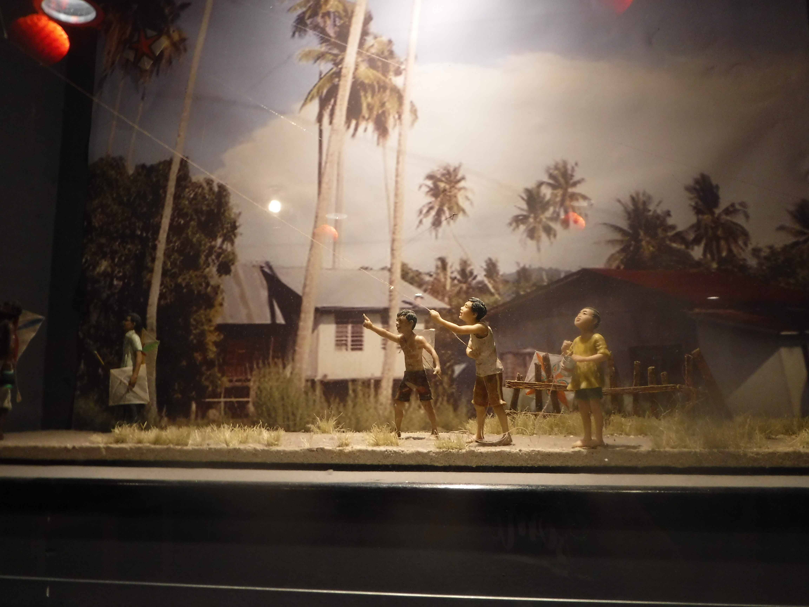

my trip to Penang

my fafrt plas in pnang .
pamng hill was botfooi .3d mozim was cool om how the thins worct. pnang strit art was cool.
.3d mozim was cool om how the thins worct. pnang strit art was cool.
fafrt food
the chicon rice is good.won tom mee was reie pact with flafor.econme ries has a lot of opsuns
wot i fond in tresting
the pinag perana mansion of histre
some infmasn of pnang
Penang is a Malaysian state located on the northwest coast of Peninsular Malaysia, by the Malacca Strait. It has two parts: Penang Island, where the capital city, George Town, is located, and Seberang Perai (formerly Province Wellesley) on the Malay Peninsula